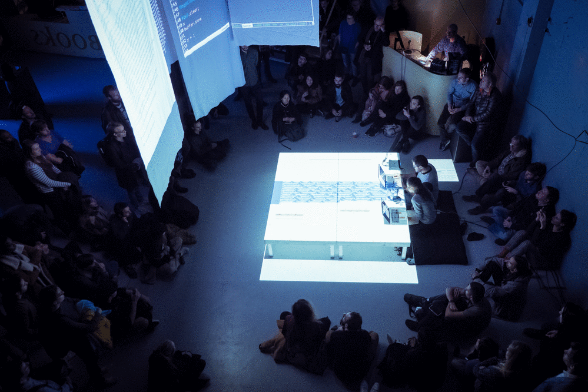
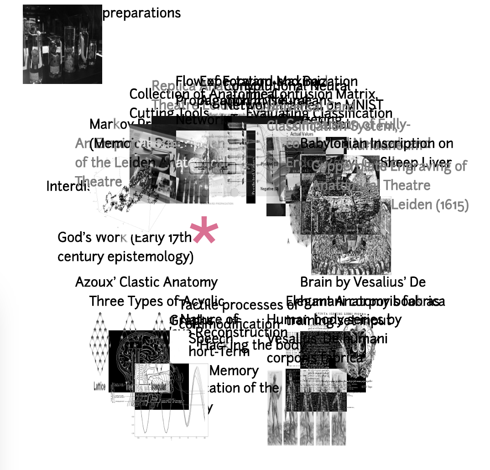
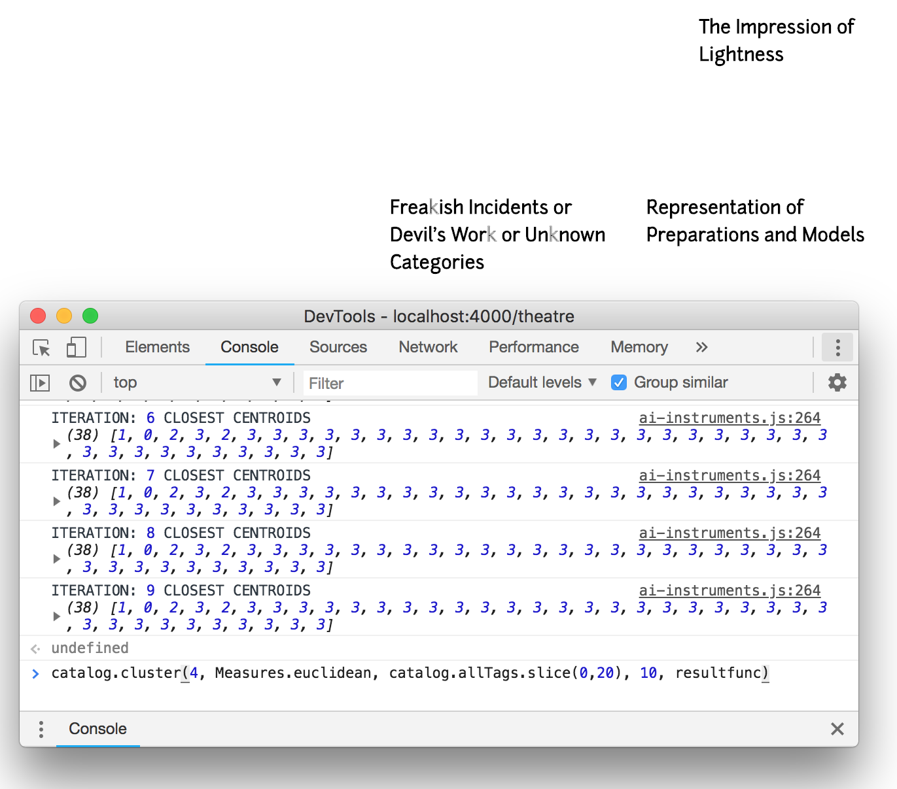

< back

Performances, Presentations and Presences:
2019 — Workshop at NN Cluster initiative
hosted by artist-researcher Winnie Soon, curator-researcher Magda Tyzlik-Carver and researcher Pablo Velasco at Aarhus University.
2019 — AI, Design, Art Conference
hosted by Institute of Experimental Design and Media Cultures of the Academy of Art and Design FHNW in collaboration with Haus der elektronischen Künste Basel (H3K).
2018 — Performative Computation Symposium
at Navel, California.
2018 — Coded Matter(s) Conference: Neural Mirrors
at Fiber Festival, Amsterdam.
2018 — Artist on AI
V2_Lab for Unstable Media, Rotterdam.

